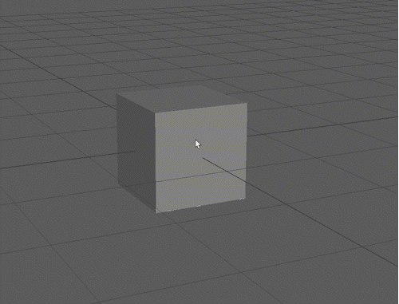
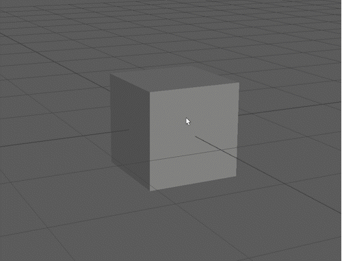
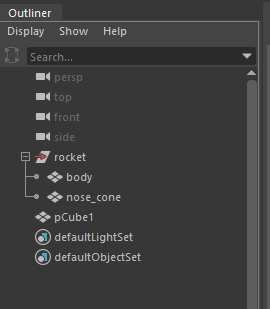
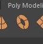

All the machines in the lab have Maya installed, if you want you use your own machine follow the installation guide.
We will be using Maya 2025, but you can use a previous version.
It is essential that you have a mouse.
The screen shots in this worksheet are from the PC version of Maya, if you are using a Mac they may look slightly different but the functionality will be the same.

This will open up the polygon cube options panel.
Here you can change the properties of the cube.
The Width, Height and Depth are the dimensions of the cube.
The divisions split the cube sides into multiple faces.
This will create a new polygon cube in middle of your scene.




We highly recomend you use a mouse when working with any 3D program, however, if you are only able to use a laptop track pad you can find other navigation tools such as the Track Tool in the View > Camera Tools menu.

The Select tool lets you select objects in your scene.

You will use many tools during these worksheets, remember that you can quit out of those tools and go back to the Select tool by pressing "q".

Avoid using the central square as this will move the cube relative to the camera making it very hard to position accurately in the current perspective view.


Avoid use the outer light blue ring as this will rotate the object relative to the camera.


By default the units in Maya are set to centimetres.
This means if I create a cube 1 unit hight it is 1cm high.
If you are building a larger object you may need to change your units

Here you can change the Linear Working units to meter.


Change the radius to 5 and the height to 30
Increase the axis divisions to 20
Press Create to add the cylinder to the scene.
Do you remember how to move objects? Move the cylinder up above the grid.

Choose values you think are appropriate for the options.
Press Create.
If you are unhappy with your choices you can select the cone and press delete to remove it and try again.
The Outliner is on the left of your screen, it shows all the object in your scene.

You can show and hide it by using the button in the left panel
When using Maya save regularly to avoid losing work.

You can use the outline to select items that may be hard to select in the scene.

It can sometimes be difficult to select what you need to in your scene if an element is on top of another.
You can temporarily hide an object by selecting it and pressing h.
To show it again, select it in the outliner and press h again.
Try this with your nose cone.
The nose cone should have dissapeared
As you have already saved, you should now use Increment and save. This will create a new save file with a number at the end of the file name.
Increment and save is very helpful as it gives you multiple copies of your file allowing you to go back to previous versions if you make a mistake.
It is important that your centre your final object so that it appears where expected when imported into other programs.
The centre of your scene is called the origin, and is in the middle of the gird.

Your rocket may already be in the centre of the scene, but if it is not you need to do the following.

When creating 3D assets it is important that you are are aware of the polygon or triangle count. For the assignments this year we will give you a maximum that you need to stay below.
A box will now appear in your scene, the 2 numbers next to tris are the total number of triangles in your scene and the number in the currently selected object/s



Press Create
Position the torus on the front of the rocket. TIP : hold down j before rotating to lock the rotation to 15 degree increments.

It is important that you don't use ctrl and c as you normally would in other packages as this creates unwanted extra grouping in Maya.
Rename the new windows in the outliner.
In the outliner you can now middle mouse click and drag the window into the rocket group


Your Maya skills will improve the more you practice, for this challenge practice the skill you have learnt so far.
This is my example, try to replicate this or make something yourself.

This week we have just used primitive shapes to create our model, Next week we will dive into the components which make up these shapes and model more complex objects.